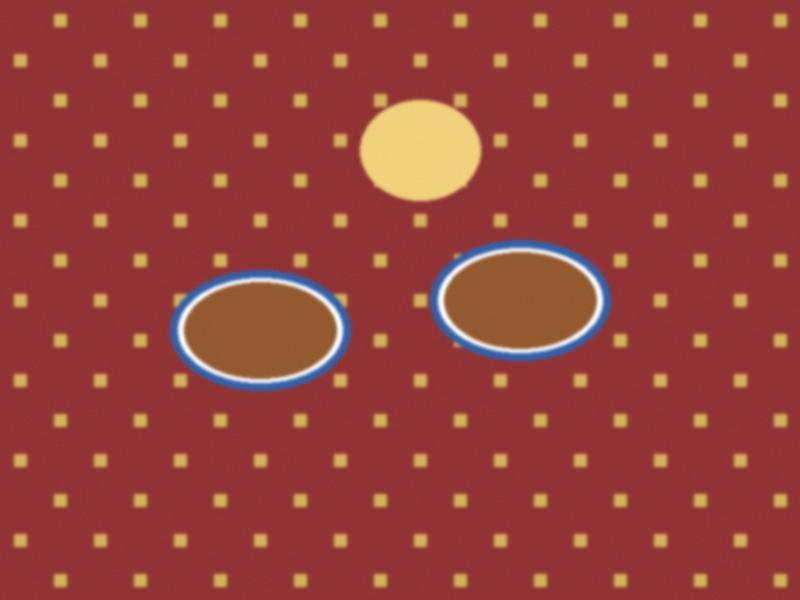

Tea table for guests
12 July 2015 · Toi

The dastorkon for my sister's guests from Nurzhan.The rule: the table is full before the guest sits. Bread first, then sweets, nuts, raisins, kurut, jam, salads, then the hot. Tea half a cup, so you can pour again and again. A full cup means "go home".
♥ 62
0 comments
Comments are closed.